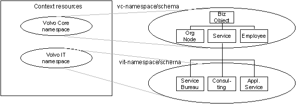

Figure 1. Overall resources domains
In this article we will argue that structures must be cultivated bottom up and not developed top-down. We introduce an example covering a news providing mechanism on a extensive intranet. The point of departure is a resource based view. Resources are assets which a worth describing and therefor usable. Resources can be described using RDF, Resource Description Framework.
Metadata is intended to cover the concept of data that is, in itself, concerned with the behaviour of data. (Tozer, 1999)
Metadata isn't just data about data, it's data about structure.
Structures for different kinds of resources can be clustered into following domains: Context, Content and Communication. Content resources such as text, pictures etc. should always be related a specific context. Context resources should capture what is in focus within the organization such as the services, departments, etc. Communication resources describes the way we publish content on web-sites, in catalogues and brochures and how we offer services such as subscriptions.
Figure 1. Overall resources domains
Anchoring the publication on web-sites, in catalogues, brochures etc. in an analysis of the underlying structure in what people in the target groups and in the organization talk about and act upon, will make the publications easy to use and natural to expand. Setting the context means capturing the organization's structure, assets, results, events and relationships.

|
|
Kerstin Forsberg is ...
Lars Dannstedt is ...
Conference date: May 15-19, 2000, Amsterdam
Paper submission deadline: November 22, 1999.
Submitted papers should present original reports of substantive new work in areas that can be theoretical (models, analyses, techniques, semantics), empirical (experiments, case studies), or implementation-oriented (new systems, tools, methodologies, user interfaces). Papers should properly place the work within the field, cite related work, and clearly indicate the innovative aspects of the work and its contribution to the development of the World Wide Web.
Topics of interest:
METADATA FOR THE WEB, ADDING CONTEXT, ANNOTATION, AND CONTENT PROFILING, SITE MANAGEMENT, ELECTRONIC COMMERCE, WEB NAVIGATION STRATEGIES, ...